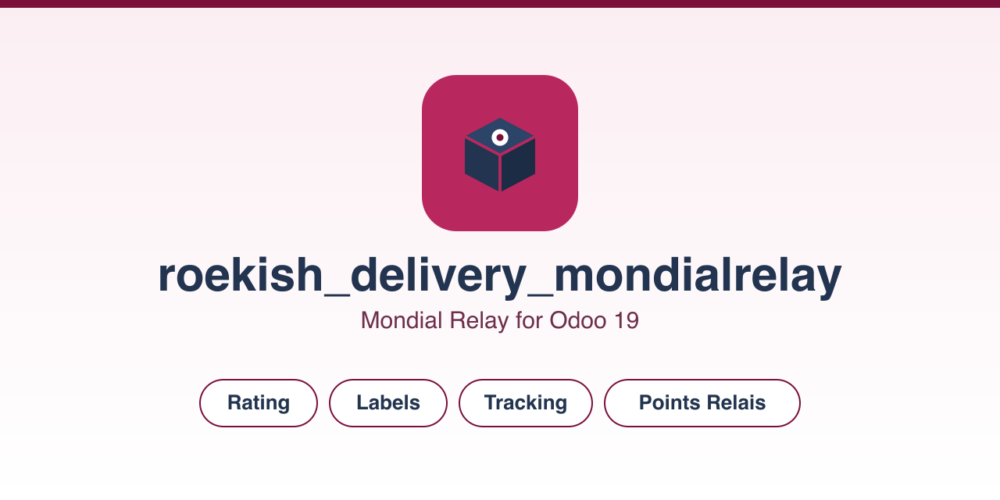

Rate shipments, generate labels, track parcels and offer Point Relais delivery, straight from Odoo.
Three ready-to-use carriers ship with indicative 2026 rates, which you replace with your own contract rates: Point Relais, Locker and Domicile. Zones cover metropolitan France, Europe zone 1 (Belgium, Luxembourg, Netherlands, Germany), Europe zone 2 (Spain, United Kingdom) and Europe zone 3 (Italy, Portugal, Austria).
The module builds on Odoo's native delivery framework. Rating and labels
work with no external library: the Connect API is called with
requests, shipped with Odoo. Point Relais search uses
zeep, optional and imported on demand.
Deploy the module on the addons_path (Odoo.sh or On-Premise).
The Apps > Import Module zip upload is data-only and cannot install a
module that ships Python models. On Odoo Online (SaaS) Python libraries
cannot be installed either, so the live Point Relais search needs Odoo.sh
or On-Premise, where zeep is available.
AGPL-3.0 licence. Published by ROEKISH.